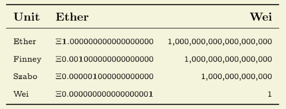
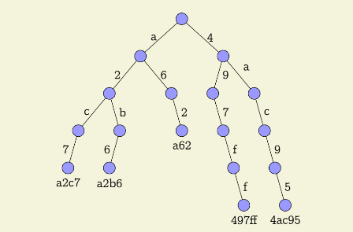

最近ブロックチェーン（Ethereum）の勉強を初めて、簡単なDApp（分散型アプリケーション）を作ってみたりしてるんだけど、ブロックチェーンの難しい部分をうまい具合にライブラリがラップしてくれてて思った以上に楽に作れてしまう。
それ自体はとてもうれしいんだけど、もっとEthereumの根幹の部分を知っておきたいなと思って、EthereumのBeige Paper（技術仕様みたいなもの）を読むことにした。
（ほんとはYellow Paperというのが一番詳細に書かれているものなんだけど、数式が多くて文系の僕には辛そうだったから、より一般向けであるBeige Paperを選んだ。無念）
といっても全部英語だし長さもあるから読んでると眠くなってしまう。
そこで、日本語訳してブログに書かなきゃいけないとなれば否が応でも読むであろう、と思ってこの時給が発生しても良いくらいの辛いタスクを自分に課した次第でござる。
それではどうぞ！
＊ 一度に全部は無理なので、順々に訳していってこの記事を更新していくという形にします。
＊ 僕自身この文書を理解しているわけではなく、皆さんのように理解しようとしている一人です。間違った訳があるかもしれないのであしからず。
＊
原文
Ethereum Protocolは決定論的、しかし実際には無限の状態機械であり二つの基本的な機能があります。一つはどこからでもアクセス可能なシングルトンの状態であること、二つ目はその状態に変化を与える仮想機械（VM）であることです。本書はこれら二つを構成するそれぞれの要素について説明するものです。
EthereumはBitcoin由来の分散型台帳モデルを仮想コンピューターに応用したもので、Bitcoinのトランザクションのような確実性をマシンレベルのオペコードに与えます。Bitcoinの取引がコンセンサスメカニズムによって確実でタイムスタンプが正しいことと同じように、Ethereum上で実行された命令は確実に実行されます。
言い換えると、Ethereumブロックチェーン上で実行されたプログラムは基本的に止めることが不可能です。これはEthereumではバグが起こり得ないという意味ではなく、Ethereumプログラムは外部要因に阻害されることなく実行されることが保証されている、という意味です。これは、暗号学の上に成り立っているブロックチェーン固有のセキュリティによる特徴です。
Ethereumは通貨としての利用を第一に考えられているわけではなく様々な利用法があります。そのため、計算力の利用過多によるネットワークの破綻を防ぐために基本的なネットワークコスト単位が存在します。これは「ガス」と呼ばれ、詳しくは第3章で説明します。ガスはEtherでのみ買うことができます。Ethereumにおける最小通貨単位はWeiで、1Weiは10e-18Etherです。Ethereumでのすべての通貨取引は内部的にはWeiで数えられます。また、Szabo、Finneyという単位もあり、それぞれ10e-6Ether、10e-3Etherに相当します。
Ethereumネットワークに対して、固有通貨であるEtherのみが力を持ちます。計算力を意味するGas、それを唯一購入できるEtherをどの程度支払うことができるかが、システムができることを決定します。
「ワールドステート」（全体的な状態）はブロックによって区分されます。ある新しいブロックはつまり、ある新しいワールドステートであるということです。ワールドステートというのは RLP を利用して、以下の2つのマッピングで構成されています。
マークルパトリシアツリーはマークルツリー（ハッシュ木）を応用したもので、各ノードがハッシュ値ではなくハッシュ値のそれぞれの文字を表しています。これにより、状態データ全体が各データへのパスを表すだけでなく、あるデータが実存したかどうかを暗号学的に証明します。言い換えると、通常のマークルツリー（ハッシュ木）とパトリシアツリー（基数木）を組み合わせることによってブロックチェーンを有効なものにします。Ethereumにおける全ての検索・並び替えアルゴリズムはこの厳重に正しいデータベースを通して行われるので、情報の正確さが保証されます。下の図は16進数のaと4から始まる探索木の例です。
（注：RLPは僕自身読んでて意味が良くわかりません笑 こちら に公式の日本語説明がありますので参考にしてください。）
RLPエンコーディングは状態データベースツリーに格納されるデータに施される処理で、それぞれのデータには16進数の接頭辞が付きます。この16進数値はあるデータの深さを決定します。RLPエンコードできるデータには2種類あります。
RLPはバイナリデータの配列を任意の深さにエンコードします。これはEthereumでの主なシリアライズ手法です。RLPはデータの構造だけをエンコードするので、あらゆるデータタイプに依存しません。
正の整数はビッグエンディアン方式で表され、後に0は続きません。つまり、RLPにおいて0という数字はと空のバイト配列になります。もし空ではない整数が0で始まっている場合、それは無効です。
グローバルステートデータベースは検索速度を早めるためにRLPエンコードされています。RLPエンコーディングはアドレスと、そのアカウント状態のマッピングを作ります。それは各々のコンピューターに保存されているため、ツリーはネットワークの遅延なしにインデックス化、検索ができます。RLPは値をバイト配列として、また、最終的にはバイト配列になりますが、値の連続として扱います。
ブロックは17つの要素でできています。そのうち15つはブロックヘッダーに含まれています。
トランザクションのリスト以外でブロックに含まれている情報。
注目すべきはジェネシスブロックの難易度です。Homesteadの難易度パラメータはEIP-2で実装され、のちに説明しますが、ブロックの生成時間が変わると生成時間を恒常的に保とうと影響を与えようとします。Homesteadでは難易度は10万ブロックごとにゆっくりと、しかし指数関数的に上がるようになっています。そして結果的にブロック生成時間を変化させproof of stakeに移行するように時間的な圧力をかけます。「難易度爆弾」や「アイスエイジ」とも呼ばれるこの仕組みはEIP-649で紹介され、EIP-2で遅れて実装されました。またEIP-100では、叔父ブロックを含めたブロック生成時間の平均のために調整数xと分母9を用いた変更がなされました。最終的にビザンチウムではEIP-649で、実際のブロック番号から300万を引くことにより、つまりブロックの生成頻度をあげることにより偽のブロック番号を作り、アイスエイジは遅らされました。これはproof of stakeの開発時間を増やすためと、ネットワークの破綻を避けるためです。
アカウントの作成はコントラクトの作成を伴います。EVMのコードを含むボディを持つアカウントはメッセージを受け取るとそれを実行します。
アカウントのステートはあるワールドステートにおけるアカウントの詳細を含んでいます。アカウントステートは4つの変数でできています。
ブルームフィルタはトランザクションリストに含まれるトランザクションのレシートのログのアドレスとトピックから成ります。
Ethereumアカウントが互いに通信しあう時の基本的な手段です。トランザクションはEthereumネットワークに送られる、暗号学的に署名された指示です。トランザクションにはメッセージコールとコントラクト作成の二種類があります。トランザクションはEthereumの中で中心的な役割をし、プラットフォームの柔軟性とダイナミズムの為に重要なものです。トランザクションは状態の遷移、つまりブロックで行われる計算を含むブロックの追加、を担う重要なものです。それぞれのトランザクションは、ブロックが確定されワールドステートに追加される前のマシンステートという一時的なステートに変化を及ぼします。
ブロックのトランザクションリストに入っているトランザクションのルートノードのKeccak-256ハッシュ。
状態遷移は状態遷移関数を通して起こります。状態遷移関数はマシンステートの変化をワールドステートに反映する際に行われる、様々な処理を高度に抽象化したものです。
ブロック受益者は160ビット（20バイト）のアドレスで、ブロックの採掘が成功した際に全ての手数料が送られます。Apply Rewardsはブロックの確定処理の三つ目で賞金をアカウントのアドレスに送ります。これは現在のブロックの難易度に関連したスカラー値です。
オマーヘッダーの検証をするEVMの処理。
トランザクションとその送り手を結び付ける説明でSECP-256k1曲線のECDSAを用います。
この関数は正の整数をビッグエンディアンで表されるバイト配列に拡張します。"・"演算子を伴うとき、連結をします。big_endian関数はRLPシリアライズ・デシリアライズを伴います。
EVMは単純なスタックベースの構造でできています。仮想マシンのワードサイズ、つまりはスタックサイズは256ビットです。これはKeccak-256ハッシュと楕円曲線を利用した計算をすることから決められました。メモリは単純なワードアドレッシングのバイト配列です。メモリsTACは最大1024ビットです。マシンは独立したストレージを持っています。これはメモリと似ていますが、バイト配列ではなくワードアドレッシング可能なワード配列です。揮発性であるメモリとは違い、ストレージは揮発性ではなくシステムステートの一部として管理されています。
ストレージとメモリは両方とも最初はすべて0です。マシンは通常のノイマンアーキテクチャには従いません。プログラムコードを一般アクセス可能なメモリやストレージに置くのではなく、特定の手順を踏んでのみアクセス可能な仮想ROMに置いてあります。マシンはスタックアンダーフローや無効な操作により、例外的な動作をすることがあります。ガス不足例外のようなときには状態の変化をそのままにすることはありません。マシンはすぐに停止し、実行者（トランザクションを起こした者、または再帰的にたどった実行者）に報告します。報告を受けたものはその例外を適切に対処します。
料金（ガスで計算される）は三つの状況で発生し、三つとも処理の実行に必要不可欠なものです。一つ目は最もよくある状況で、処理実行時の計算力に対する料金です。二つ目は下位のメッセージコールやコントラクト生成のための料金として発生することがあります。CREATE、CALL、CALLCODEの処理に対しての料金が含まれます。三つめは、メモリ使用料の増加時に料金が発生することがあります。
処理の実行に際してのメモリ使用に対する料金は、読み書きどちらにしても全てのメモリインデックスが含まれるような32バイトの倍数の中での最小数に比例します。料金はその時々に発生します。たとえば以前にインデックス化されたメモリより32バイト以上大きいメモリエリアを参照した時、追加の料金が発生します。このため、アドレスが32ビットを超えることはほとんどありません。
実装は最終的にはこれを管理しなければなりません。ストレージは使用容量を減らすことを動機づけるような料金体系をしています。（全てのノードのステートデータベースの肥大化に直接かかわるため。）ストレージの内容を削除するときには料金はかからないばかりか、むしろ返金がされます。通常のストレージ使用よりも最初のストレージ使用の方がコストがかかるため、返金は前もって行われます。
トランザクションの実行は状態遷移関数を定義します。しかし、いかなるトランザクションでも実行される前に内部状態が有効かどうかを確かめるためにテストを行う必要があります。
実行にかかった料金とトランザクションのログは保存されますが、トランザクションの実行結果はトランザクションのレシートtx_receiptに保存されます。トランザクションレシートにはトランザクションの実行に際して発生したログイベントlogs_setと、それらのログイベントからの実際の情報を含むブルームフィルタであるlogs_bloomがあります。さらに、トランザクション後の状態であるpost_transaction(state)と、そのトランザクションを含むブロックが使用したガスの量gas_usedがトランザクションレシートに記録されています。結果的に、トランザクションレシートは様々な実行の記録です。
有効なトランザクションの実行ははステートを永久に変更させることから始まります。送り手のノンスは1増え、所持金はトランザクションの実行前に支払う必要のある合計料金collateral_gasの分だけ減ります。メッセージコールやコントラクト生成がコントラクトアカウントのコード実行によるものであるとき、トランザクションの実行者と送り手は同じではありません。
トランザクションが実行された後、最終段階の一歩手前であるPROVISIONAL_STATEに入ります。world_stateに変化を及ぼす前に一つ一つのEVMオペコードの実行に使用されたガスは以下を生成します。
コードの実行はいつもガスを減少させます。もしガスが尽きたときout-of-gas error(oog)が発生し、結果のステートは空のセットとして定義されワールドステートには何も影響を及ぼしません。これがEthereumのトランザクションのような特徴を形作っています。WORLD STATEを変化させるためには全ての処理を通過しなければならず、そうでない場合完全に変化を及ぼしません。
To be continued...
{kind=link}
{kind=link}